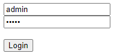

Login System Tutorial Part 5 - Home Page Access¶
In this tutorial, we will talk about accessing the home page after the user logins an account with valid credentials.
Create a new file in the views folder named home.go. Inside the file, create a handler for the home page.
package views
import (
"net/http"
"github.com/uadmin/uadmin"
)
// HomeHandler handles the home page.
func HomeHandler(w http.ResponseWriter, r *http.Request, session *uadmin.Session) {
// Initialize the fields that we need in the custom struct.
type Context struct {
User string
OTPRequired bool
}
// Call the custom struct and assign the full name in the User field under the context object.
c := Context{}
c.User = session.User.FirstName + " " + session.User.LastName
// Check if the user has OTPRequired enabled in the database.
if session.User.OTPRequired {
/* Assign a boolean value to OTPRequired field. We will use this to manipulate the grammar
in the UI. */
c.OTPRequired = true
}
// Render the home filepath and pass the context data object to the HTML file.
uadmin.RenderHTML(w, r, "templates/home.html", c)
return
}
Create a new file in the templates folder named home.html. Inside the file, let the user know that the user is logged in by displaying their full name and if the OTPRequired is enabled or not.
<!DOCTYPE html>
<html lang="en">
<head>
<meta charset="UTF-8">
<meta name="viewport" content="width=device-width, initial-scale=1.0">
<meta http-equiv="X-UA-Compatible" content="ie=edge">
<title>Home Page</title>
</head>
<body>
<!-- .User is a field that came from the HomeHandler in Golang -->
<h1>Login as {{.User}}
<!-- Validate if the OTP is enabled in the user. Use "with" if the
user has OTPRequired enabled in the database. Otherwise, use "without". -->
{{if eq .OTPRequired true}} with {{else}} without {{end}}
2FA Authentication</h1>
</body>
</html>
In login.go, add redirection to say that if the OTP has inputted properly, it will go to the path based on the value of the next.
// Check for OTP
if session.PendingOTP {
// Some codes
} else {
// ----------------- ADD THIS CODE HERE ----------------- //
/* If the next value is empty, redirect the page that omits the logout keyword in the
last part. */
if r.URL.Query().Get("next") == "" {
http.Redirect(w, r, strings.TrimSuffix(r.RequestURI, "logout"), http.StatusSeeOther)
return
}
// Redirect to the page depending on the value of the next.
http.Redirect(w, r, r.URL.Query().Get("next"), http.StatusSeeOther)
return
// ----------------------------------------------------- //
}
Lastly, add an authentication in the views_main.go to say that this session is preloaded with a user. Otherwise, load the LoginHandler.
// MainHandler is the main handler for the login system.
func MainHandler(w http.ResponseWriter, r *http.Request) {
// r.URL.Path creates a new path called "/login_system/"
r.URL.Path = strings.TrimPrefix(r.URL.Path, "/login_system")
r.URL.Path = strings.TrimSuffix(r.URL.Path, "/")
// -------------- ADD THIS CODE HERE -------------- //
// Authentication : This session is preloaded with a user.
session := uadmin.IsAuthenticated(r)
if session == nil {
// LoginHandler verifies login data and creating sessions for users.
LoginHandler(w, r)
return
}
// HomeHandler handles the home page.
HomeHandler(w, r, session)
return
// ----------------------------------------------- //
}
Now run your application and login your account.
After the system validates the username and password, it will display the OTP input field in the UI. Check your terminal or Google Authenticator for the OTP (e.g. 123456).

Result

Now go to the admin path in the address bar (e.g. http://localhost:8080/admin/). Inside the “USERS” model, disable the OTPRequired in the System Admin user.

Go back to the login system path in the address bar (e.g. http://localhost:8080/login_system/). Assign the username and password in the login form (e.g. admin, admin). Click Login button to submit.
Result

Click here to view our progress so far.
In the next part, we will discuss about logging out a user account from the home page.